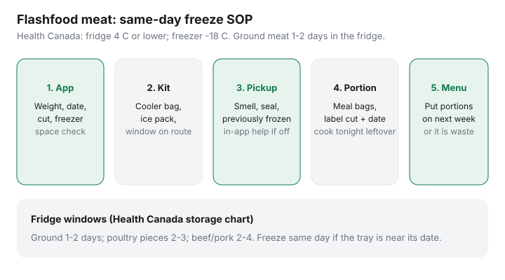

Food & Groceries · Canada
Flashfood meat guide: buy discounted protein and freeze it safely the same day
Discounted meat is the highest-ROI thing Flashfood sells. It is also the fastest way to turn “50% off” into garbage. The tray is already close to its date. You still have a commute. The freezer is a jumble. That is how Loblaw’s surplus partnership saves someone else money and costs you a fee.
Loblaw said the Flashfood partnership helped Canadians save more than $58 million in 2025 (news release 2 Mar 2026). Your household gets a chicken tray if you run a same-day freeze. This is the operational SOP for Loblaw-banner Flashfood meat in Canada — not a U.S. “yellow sticker” blog.
Disclosure: Cooler bags and freezer tools are optional offer types. Flashfood itself is not a natural affiliate product. Saving Optimizer may earn a commission if we later add those links. We do not currently claim Flashfood or Loblaw partnerships. A grocery bag and painter’s tape work.
Key takeaways
- Evaluate weight, date, cut, and freezer space in the app before you pay.
- Pickup on the commute with a cooler bag. Missed windows are donated surplus plus a fee.
- Default: portion and freeze the same day. Ground meat is not a three-day plan (Health Canada: 1–2 days in the fridge).
- Stews and ground freeze well. Delicate fish and “cook tonight” trays are not freezer projects.
- Compare to the flyer after fees. A 50% Flashfood thigh can still lose to a $3.99/lb loss leader you were buying anyway.
How to evaluate trays in the app before paying
Open Flashfood, filter meat, and ignore bakery. For each tray check:
- Cut and grind: thighs, drumsticks, stew beef, and ground turkey are meal-prep friendly. Organ meat and unnamed “BBQ trays” are only for households that already cook those.
- Weight vs price: convert to $/kg in two seconds. A $9 tray at 800 g is $11.25/kg before the fee.
- Date language: best-before is quality, not a poison cliff (CFIA), but surplus meat is not the week to philosophize. If pickup is tomorrow afternoon and the date is tomorrow, cook tonight or skip.
- Previously frozen: if labelled, plan to cook, not to freeze again for months.
- Space: no clear freezer shelf, no checkout.
Coverage is Loblaw banners (No Frills, Superstore, Maxi, Zehrs, Provigo, Wholesale Club, and others — 900+ stores in the 2 Mar 2026 release). Empty map, empty plan. The broader app walkthrough is the Flashfood Canada guide.
Pickup timing and cooler bag kit
Windows are often later in the day. That fits a commute and fights the “I’ll go at noon” fantasy. Pack: insulated bag, one ice pack, a spare plastic container so a leaking tray does not juice the back seat. Keep raw meat separate from ready-to-eat food — Health Canada storage basics.
At the Flashfood Zone, check smell, seal, and colour. Off? Use in-app help. Do not bargain with bacteria to “not waste the deal.”
Same-day portion and freeze workflow

- Home: wash hands, dedicated board for raw meat.
- Split into meal-size bags or containers (the amount you actually cook).
- Press air out; label cut, weight if you care, and pickup date.
- Freeze flat. Cook one portion tonight if dinner is unplanned — that is allowed.
- Add the frozen portions to next week’s menu in the weekly system. Unscheduled mystery meat is waste.
Health Canada leftover tips: cooked meat 3–4 days in the fridge or freeze. Thaw in the fridge, not on the counter.
Best cuts for freezing vs cook-tonight
| Cut | Freeze? | Cook tonight instead |
|---|---|---|
| Chicken thighs / drumsticks | Yes — family packs portion well | If already near the date and previously frozen |
| Ground meat | Yes, immediately | If you can make chili tonight |
| Stew beef / pork shoulder | Yes | Rarely urgent if dates are comfortable |
| Steaks / chops | Yes if well wrapped | If you wanted a nice sear this week |
| Fish / seafood | Selective — quality drops fast | Default cook-tonight |
| Prepared meat trays | Usually no | Eat or skip; not a freezer system |
Health Canada quality times in a proper freezer (not safety limits): ground 2–3 months; poultry pieces about 6 months; beef longer. Eat the cheap thighs in the next month. They are not an heirloom.
Tracking savings vs regular flyer meat
Write one line in your notes: Flashfood $/kg versus this week’s Flipp protein. If No Frills has thighs at a loss-leader price under your Flashfood unit price after the fee, buy the flyer and skip the app. Cheap protein math also lives in cost per gram. Surplus is a substitution, not a fourth store.
Fees and minimums that change the ROI
Community receipts described a 5% service fee from May 2024, then 8% from 6 January 2026, often capped around $2.99, plus tax on the fee in some provinces. Flashfood’s public terms may only say “service fee.” Trust checkout. A $18 meat order at 8% is about $1.44 — fine on the commute. A $6 pack plus 20 minutes of parking in January is not. CRA mileage rates change; we use ~$0.70/km as a teaching all-in. Skip dedicated drives.
PC Optimum: prepaid Flashfood typically does not sit on the grocery receipt. Scan the card on the rest of the cart. Do not skip a loaded offer because you already “saved.”
Cooler kit: you do not need a branded bag. Any insulated tote plus a frozen water bottle beats a warm trunk. If you bike, pick up last, go home first.
Sources & date stamps
- Loblaw news release, 2 Mar 2026: Flashfood partnership saved customers more than $58 million in 2025; 21 million pounds diverted; 900+ stores.
- Health Canada, safe food storage chart (fridge/freezer temperatures and meat times) reviewed 7 Aug 2026.
- Health Canada, leftovers (2–3 days or freeze; thaw in the fridge).
- CFIA consumer date labels (best-before vs expiry vs freeze-by).
- Flashfood product pages and community fee reports (8% / ~$2.99 cap as of Jan 2026 receipts) — confirm checkout.
Frequently asked questions
How fast should I freeze Flashfood meat?
If you will not cook it within Health Canada’s fridge window, freeze the same day you pick up. Ground meat: 1–2 days in the fridge at 4°C or lower. Poultry pieces: 2–3 days. Beef/pork steaks and roasts: 2–4 days. Surplus trays are often already near a best-before, so same-day freeze is the default.
What temperature should the freezer be?
Health Canada: refrigerator 4°C (40°F) or lower; freezer −18°C (0°F) or lower. Keep raw meat in a container so it cannot drip.
Can I refreeze meat that was previously frozen?
If the tray is labelled previously frozen and has been thawed at the store, treat it as cook-soon food. Quality drops if you freeze it again. When in doubt, cook then freeze the cooked portions (Health Canada leftover guidance).
Do Flashfood meat dollars earn PC Optimum?
Usually not on the prepaid in-app order. Scan PC Optimum on the rest of the Loblaw cart. Treat Flashfood as a separate mini-cart.
When do fees wipe out the meat deal?
When the only item is a small pack, the service fee (community: 8% capped around $2.99 as of Jan 2026 — check checkout) plus a dedicated drive exceeds the discount. Keep pickups on a trip you are already making.